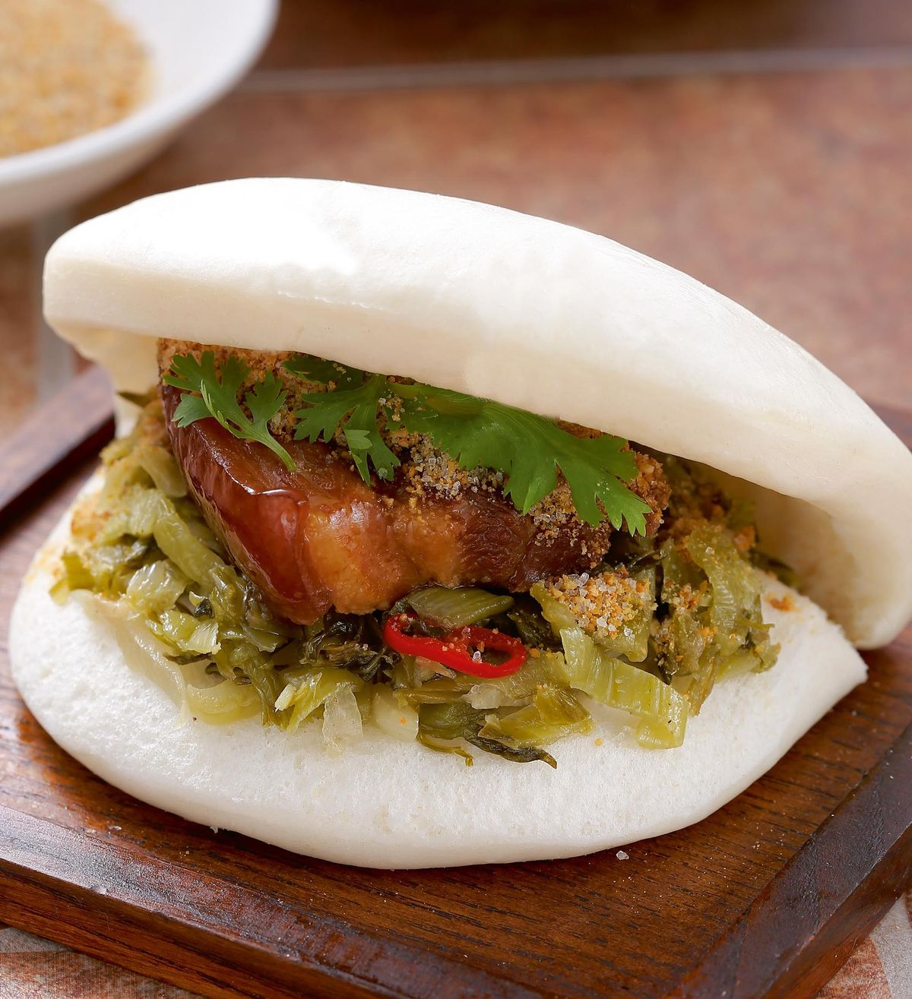

-

發源自台灣的手搖飲料，只要來到台灣，一定要喝杯珍珠奶茶。 珍珠特殊的彈牙口感，混入牛奶和不同風味的紅茶， 珍珠奶茶現在經過商家的巧思，逐漸變形成各式各樣的飲品，例如： 使用大顆珍珠的波霸奶茶、使用黑糖熬煮的珍珠黑糖鮮奶、以及加入布丁的布丁奶茶。
-

可以隨手帶著走的炸雞排在夜市是人氣非常高的必吃的小吃！ 口味方面從單純灑上辣椒粉，慢慢變化出改以灑上五香粉、 海苔粉、芥茉粉、起司等粉狀調味料的雞排，或是包覆起士內餡的起士雞排， 因應不同口味，也出現了碳烤雞排、焗烤雞排等不同的調理方法，非常多口味可選擇！
-

有國民小吃的形象的滷肉飯，是用煮熟碎豬肉或炒香肉燥（豬絞肉）及醬油滷汁，淋上白飯的平民美食。 全台各地都有在賣滷肉飯，有些店家搭配筍乾醃蘿蔔乾；南北地區的滷肉飯也會有口感以及肥瘦肉的比例差異。 因為價格便宜，配料簡單，所以點餐時通常再搭配些青菜，更具滿足感。
刈包
-

割包，又寫做「刈」包，是以刀切開的意思，將類似饅頭口感外皮對摺起來再包入餡料，像是台版的漢堡～ 傳統餡料通有：片狀五花滷肉、酸菜、花生粉及香菜…等 客人也能依照自己的喜好，選擇瘦肉或肥肉，甚至要加甚麼配料。
蚵仔煎
-
1661年鄭成功大敗荷軍，荷蘭人一氣之下把米糧全都藏了起來，鄭軍因為缺糧， 便就地取材地將在地的特產蚵仔、地瓜粉混合加水煎成餅吃，因此流傳下來。 台灣各地蚵仔煎的賣相和配料，也會因地域性而有些微差別。 中部蚵仔煎的特色之一，是青菜常使用當地盛產的空心菜； 北部和南部用的則是小白菜；而南部更會放大量的豆芽菜。 所以真的每一家的蚵仔煎，味道和模樣是完全不一樣的！